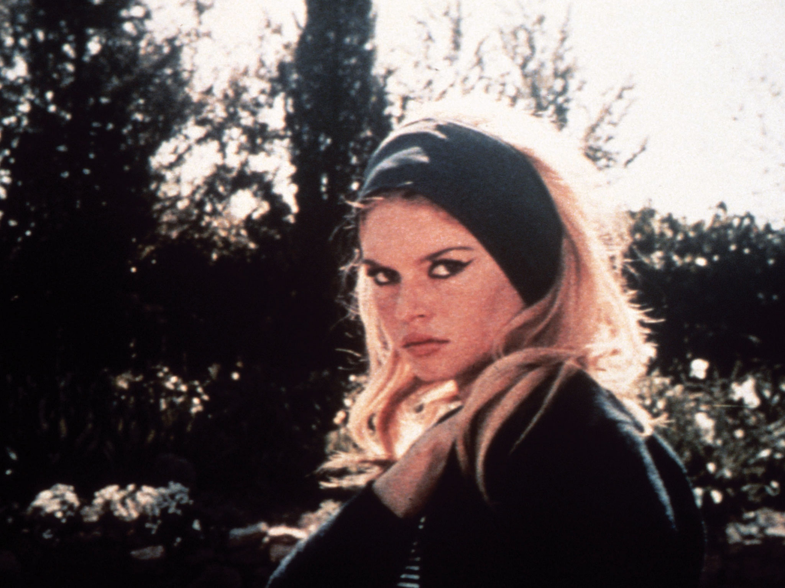

1963’te Le Mépris seyirciyle buluşmadan önce, Jean-Luc Godard À bout de souffle (1960), Une femme est une femme (1961), Vivre Sa Vie (1962) ve Le petit soldat (1963) isimli filmlerini çekerek, Godard Sineması olarak anılan ve belirli kendine has karakteristik öğeleri içinde barındıran sinema duruşuna kaynak olmuştur. Le Mépris ise büyük bütçeli bir film olmanın faydalarını görmekle birlikte, Jean-Luc Godard’ın bilindiği anlamdaki çizgisinden -özünü koruyarak da olsa- kısmen çıkmasına sebep olmuştur. Yine de, kendi başına önemli bir film olmakla birlikte, Godard Sineması’nda da, yüksek bütçenin getirileri ve götürüleri bir arada ele alındığında, sanatsal anlamda neler yapılabileceğinin incelenmesi açısından bir mihenk taşı görevi görmektedir. Dahası, birçok eleştirmen tarafından sinema tarihinin en önemli filmleri arasında gösterildiği gibi, Philip Lopate’in The New York Times için ele aldığı köşe yazısında belirttiği üzere, Sight & Sound’ın eleştirmenlerinden Colin Maccabe’e göre “savaş sonrası Avrupa’da yapılmış en iyi sanat eseri”dir (1997). Bu güçlü ifadenin altında yatan sebepler; anlatı yapısındaki açıklık ve anlaşılırlığın, kapsamlılıktan ödün verilmeden sunulabilmesinde, Godard’ın birçok filminde onunla işbirliği yapmış Raoul Coutard’ın görüntü yönetmenliğinde sinemaskop formatının filmin bireysel, insancıl küçük bir hikayeden köklenen destansı yapısını (tıpkı filmin içinde çekilen Odysseus filmi ve temel aldığı destan gibi) desteklemesinde ve yine bu destansı; ama modern gerçekler altında evrensel sayılacak bu hikaye Georges Delerue’nün izleyeni sarmalayan ve ona filmin temelinde yatan insani duyguları hissettiren müziklerinde aranabilir.
Le Mépris’nin hikayesi, aynı anlamı taşıyan ve Alberto Moravia tarafından yazılan Il Disprezzo (1954) adlı romana dayanmaktadır. Dedektiflik hikayeleri yazan ve oyun yazarı olmak isteyen Paul Javal’in; Amerikan yapımcı Jeremy Prokosch’un, Fritz Lang’ın yönettiği Odysseus filminin senaryosuna yeni sahneler eklemesi teklifini kabul etmesi sonrasında eşi Camille ile aralarındaki sevgi ilişkisinin ikisi tarafından da ifade edilmesi ve anlaşılması güç bir şekilde çöküşe geçmesi ve farklı boyutlar aldıktan sonra son bulması; içgüdüler, tutkular, dönemin insanları ve Homeros’un Odysseia’sının insanları arasındaki benzerlikler ile farklılıklar paralel bir şekilde ortaya serilerek işlenmiştir. Filmin üç ana bölümden ve bunlara tekabül edecek üç ana konumdan oluştuğunu söyleyebiliriz: Cinecittà, apartman dairesi ve Capri.
Filmin Cinecittà’da geçen sahnelerinde karakterleri temel olarak konumlandırır ve güç dengelerini hissetmeye başlarız. Jeremy Prokosch’un yapımcı olarak gücü temsil ettiği; gerek çekim açıları ve mise-en-scene ile, gerek Prokosch’u canlandıran Jack Palance’ın sert mizaçlı oyunculuğu ve geniş fiziğiyle ortaya konmuştur. Onun yanında kısa, sessiz ve zayıf kalan Paul; ikisi arasındaki büsbütün zıtlığa işaret etmektedir. Filmin kilit sahnelerinde, karakterlerin çoğunlukla en temel içgüdüler ve hatta bilinçdışı kararlar ile hareket ettiği göz önünde bulundurulursa; bir hiyerarşik sıralama önerilebilir. Bu sıralamada Jeremy Prokosch filmdeki topluluk içinde alfayı temsil etmektedir: Üstün güce ve baskınlığa sahip, aynı zamanda kaynaklara ve istediklerine rahatlıkla ulaşabilen bir erkektir. Erkekler arasındaki bu hiyerarşik sıralamada, temel düzeyde Paul, Prokosch’un altında kalmaktadır; gerek fiziksel anlamda zayıf kaldığı için, gerek entelektüel yapısı müsade etmediği için, gerek filmin senaristi olarak yapımcıya bağlı olduğu için. Cinecittà’da geçen sahnelerin sonlarına doğru Paul’ün eşi Camille ile tanışırız ve yukarıda bahsi geçen hiyerarşinin ilk kez teste tabii tutulduğu o önemli sahneyi izleriz. Prokosch hepsinin birlikte geçireceği akşam için, Camille’i arabasına davet eder ve Paul’ün taksi tutarak gelebileceğini aktarır. Camille, eşine onunla beraber taksiye binme isteğini belirtse de; Paul nötr kalmak bile bir yana, eşini Prokosch ile arabaya binmesine teşvik eder. Uğradığı ve bilinç düzeyinde sebeplendiremediği şoktan ötürü, Camille’in yüz ifadesi tamamen değişir ve kin dolu bakışlarını Paul’e atarak arabaya biner. Camille belki eşi onu bu hiyerarşik düzende “korumadığı” için, belki de Roger Ebert’ün de belirttiği gibi, eşi tarafından yapımcıya sunulması (1997) fikrinden tiksindiği için, bu küçümser ruh haline bürünmüştür. Filme konu olan hor görmenin temelleri bu sahnede atılmıştır. Prokosch’un evine varmasıyla bu hor görme gerek aralarındaki iletişimde, gerekse bakışlarda devam etmektedir; yine de Paul bunlara bir anlam verememektedir. Günün ilerleyen saatlerinde bunun üzerine düşünürken; belki de bu soğukluğun sebebinin, Prokosch’un asistanına kısa süreli sarkmasını, eşinin görmesi olduğunu düşünecektir; ama eşinin nefretinin kaynağının, kendisinin ona karşı olan düşünceleri ve tavırları ile alakalı olduğunu ilk fırsatta düşünmeyecektir.
Cinecittà ve Prokosch’un evinde geçen sahnelerden sonra, otuz dakikadan biraz fazla süren apartman dairesi sahnesi başlar. Paul, eşinin davranışlarındaki ve konuşmalarındaki değişimi gözlemlediği için, Camille’in imalı birkaç cümlesinden sonra, onda neyin değiştiğini sorar. Onu düşündüren şeylerden birisi de, onun yokluğunda Prokosch ile aralarında bir şey olmuş olabileceğine dair taşıdığı endişe; zira Camille, film-içindeki-film olan Odysseus’un çekimlerinin gerçekleşeceği Capri’ye Prokosch tarafından davet edildiğinde, bunu istemez. Paul, Camille’in bunu istememesini ve akla yatkın sebepler sunmamasının Prokosch ile ilişkili olabileceğini düşünür. Bir yandan “Prokosch ile senin aranda bir şey mi var?” sorusuna olumlu veya olumsuz bir cevap yerine “Sen hastasın” cevabını alması, rahatsızlığını güçlendirir. Eşi Camille’e dair bu düşüncelere sahip dahi olmak, Paul için büyük bir meseledir; çünkü eşini, kendi adına hep çantada keklik olarak görmüştür. Kendisinden daha aşağıda gördüğü bu insanın onu küçümsüyor olma ihtimali bile Paul’ü rahatsız etmekte ve düşündürtmektedir. Evliliklerinde bu eşitsizliğin Camille de farkındadır. Hatta evdeki bir sahnede, Paul’ün Camille’in neden bu kadar düşünceli olduğu üzerine sorduğu soruya cevap olarak Camille “İnan ya da inanma, düşünüyorum. Bu seni şaşırttı mı?” diye yanıt verir. Philip Lopate’in de belirttiği gibi, Paul kendini eve ekmek getiren zeki kişi olarak, Camille’i ise -belki de ona karşı hissettiği akli ve finansal üstünlükten ötürü- cinsel bir ganimet olarak görmektedir (2002). Bu güç dengesini kaybettiğini hissettiği, evde geçen sözel bir tartışmada Camille’e şiddet uygulayıp “Neden 28 yaşında bir daktilografla evlenecekmişim ki?” diye sorgular. Belki de sahip olduğu imkanları kaybetmeyi göze alamadığından Camille, tüm hislerine rağmen, özür diler. Öyle ki Camille tam olarak sebeplendiremese de; öfke ve hor görme duygularını, nereye gideceğini kestiremeden ortaya serer; ama her an hissettiği sevgiye geri dönmeye hazırdır da. Yer yer uzlaşır olmasından, eşini sevdiğini iddia etmesinden bunu görebiliriz. Fakat Paul’ün kendi güvensizliği ve içine yerleştirdiği olumsuz histen ötürü, Camille’in tüm ısrarlı açıklamalarına rağmen, onun tarafından gerçekten sevildiğine inanmayı reddeder. Camille affedici ve nazik davranmaya başlasa da Paul neden onu sevmediğini sormakta üsteler, ta ki bu hipotezi gerçek oluncaya kadar(Lopate, 2002). Paul, Camille’in aksini gösteren tüm açıklamalarına rağmen; işleri yoluna sokmaya çalışacağına, en korktuğu kabusunun gerçekleşmesine yol açmıştır. Bir yandan Camille de eşinin koruyuculuğuna ve ona olan tutkusunun gerekliliklerini yerine getirmediğine dair taşıdığı şüphelerden ötürü, sosyal anlamda eşinin “erkekliğini” sınar evde geçen sahnelerde. Paul’ün Camille’in annesinin ağzından laf almaya çalışması üzerine, Camille onu boşamakla tehdit eder. Paul’ün kaba sözlerin ona hiç yakışmadığını söylemesi üzerine, bildiği kaba sözleri art arda sıralar. Yataklarını ayırır. Paul’ün sevişme talebini “Sevişelim ama işini çabuk bitir” gibi kestiren bir ifadeyle karşılar. Bunları; Paul onu çok incittiği için, “tam olarak kafasında netleşmese de” gizli bir intikam duygusuyla yaptığını, ev sahnesinin arasına yerleştirilmiş monologlarda belirtir. Paul ise bu monologlarda Camille’in onu terk edebileceği fikrinin aklını kurcaladığını ve bunun bir felaket olacağını düşündüğünü aktarır. Hatalı olanın kendisi olduğunu, eşinin sadakatsizlik yapmadığını açıklar ve eşinin davranışlarının altında yatan gerçeği bildiğini “Gerçek, görünür olmasına rağmen kanıtlanmayı bekliyordu” diyerek belirtir, ki bunu ifade ederken, filmde Prokosch, o ve Camille’in; Prokosch’un arabasının önünde olduğu o sahneyi izleriz. Bu da kanıtlanmayı bekleyen o gerçeğin, Paul’ün Camille’i Prokosch’a sunması ile alakalı olduğunu, Paul’ün sezinlediğini gösterir bir anlamda. Apartman dairesinde geçen son sahnede, Vivre Sa Vie’de benzerine rastlayacağımız bir görüntü yönetimi ile; Paul, yanıp sönen bir abajur ve Camille arasında düzensiz bir şekilde kaydırılan kamera eşliğinde, kadrajda sadece biri gözükecek şekilde; ilişkilerini, aralarındaki sevgiyi ve bunun doğruluğunu tartışırlar. Paul, Camille’i tekrar ona beslediği sevginin ve bunu ifade ettiği anların yalan olması ile suçlar. Yalan söylemesini yaşadıkları dairede tutunabilmek ile ilişkilendirince, Camille dairenin onun için önemli olmadığını aktarır ve istiyorsa satabileceğini aktarır. Önceden “otelden çok daha iyidir” demesinin, Paul’ü mutlu etmek için olduğunu belirtir. Bu cümleleri, içindeki öfkeyle mi, bir gurur ile mi yoksa doğrulukla mı söylediğini kestirmek güç. Todd McGowan bu durumu yorumlarken; ikisinin de birbirlerinin arzularını bilmediğini, Paul’ün, eşinin arzusunun, yaşadıkları dairede bir yüksek zümre hayatı sürmek olduğunu sandığını; ama Camille’in sadece Paul arzular gibi göründüğü için daireyi istediğini belirtir. Paul’ün Camille’in sahip olduğu bir isteği gerçekleştirmek için senaryoyu yazmayı kabul ettiğini, Camille’in ise sırf Paul’ün böyle bir arzusu var diye, benzer bir arzuya sahipmiş izlenimi yarattığından bahseder. Böylelikle hiç kimsenin kapatamayacağı bir yanlış anlaşılmalar döngüsü oluşturduklarını aktarır McGowan. (n.d.). Karmaşık yanıtlar verdikten sonra Camille, onu sevmediğini ve sebebini, nasıl başladığını bilmediğini söyler; bunun artık önemsiz olduğunu; çünkü onu sevmediği gerçeğinin sabit olduğundan bahseder. Paul’ün sebeplendirme çabasını alaycı ve karmaşık yanıtlarla karşılamaya devam eden Camille üzerinde Paul bir kez daha şiddete başvurur. Bir öncekine kıyasla, Camille bu sefer, belki de kocasına dair fikirleri gitgide değiştiği ve kesinleştiği için uyumlu bir yanıt vermektense, şiddetle tepki verir ve öfkeyle evden uzaklaşırken, filmin başından beri ilk kez, belki öncesinden farkında olduğu, belki de ilk kez o anda farkına vardığı; davranışlarına sebep olan şeyi açıklar: Eşini küçümsediğinden ve aşkının bitmesine sebep olan şeyin bu olduğundan bahseder ve eşi ona dokunduğunda yaşadığı iğrenmeyi aktarır. Takip eden taksi sahnesinde, Camille, dediklerini unutmasını söylese de, Paul taşıdığı güvensiz karakter ve belki de kendinden değersiz görmesine rağmen, eşini kaybedecek (kaybetmiş) olmasına dair taşıdığı korku sebebiyle, Camille’in onu küçümsediğine dair cümlelerini filmin geri kalanı boyunca sorgulayacaktır.
Capri’de başlayan bölümün hemen ilk anlarının birinde Prokosch, Camille’e; Lang ile Paul’ü yalnız bırakmalarını ve onunla villaya gelmesini teklif eder. Camille, ya Paul’e bir şans daha tanıdığından (“dediklerini unutması”nı söylediğinde samimi olduğundan) ya Prokosch’u istemediğinden ya da geneleksel, eşinin söylediklerine uyan, itaat eden bir kadın(Lopate, 2002) olması sebebiyle; kocasıyla kalmayı tercih ettiğini aktarır. Prokosch’un ısrarı üzerine, incelmiş ve kırılmak üzere olan ses tonuyla son bir kez Paul’e seslenir. Paul filmin başında olduğu gibi, tekrar eşinin beklentilerini karşılayamaz ve kendi elleriyle eşini predatör Prokosch’ün kollarına bırakır. İkinci kez anlaşıldığı üzere, Camille’in Paul’e beslediği hor görmenin kökünde Paul’ün arzulayan özne olma konumunu sürdürmeyi reddetmesi yatmaktadır (McGowan, n.d.). Camille artık biraz daha emindir ve Cinecittà’da yaşadığı şoku bir daha yaşamaz, yüzünde artık sadece nefret vardır. İlerleyen sahnelerde eşinin gözleri önünde Prokosch ile öpüşür. Prokosch ile arasındaki güç dengesinin ve kendisinin farkındadır Paul. Yanında silah taşımasına rağmen, bu silah bir aksesuardan daha fazlası olamaz. Böylesine bir şey yapamayacağını bilen Paul, belki eşinin gözündeki değerini kurtarmak, belki de Prokosch’a başka bir yolla zarar vermek istediğinden, kısa bir süre önceye kadar sık sık beğendiğini belirttiği senaryoyu yazmaktan vazgeçtiğini aktarır. Eşinin olumsuz hisleri ve bakışları altında git gide ezilmekte olan Paul, artık tüm benliğini sorgular olmuştur. Kendi başına karar veremez hale gelmiş ve karar vericinin Camille olması halinde, işlerin düzelebileceğini düşünüp, senaryoyu yazma kararını dahi Camille’e bırakır. Camille, ikisi adına kararlar verip, aileyi çekip çevirecek, kendisini kollayacak bir erkeğin varlığını arzularken; ilişkinin ve kararların yükünün üzerine bırakılması, onu iyice öfkelendirir, eşine olan küçümsemesi daha da güçlenir.
Filmin son sahnesinde, yüzleşme gerçekleşir. Paul belki bir şeyleri döndüremeyeceğini bildiğinden, belki nasıl davranması gerektiğini kestiremediğinden, belki de gurur yaptığından; hiçbir tepki göstermeyerek, Prokosch’un onu öptüğünü gördüğünü söyler. Camille’in Paul hakkındaki fikirleri daha keskin ve net olduğu için umursamaz bir şekilde “bildiğini” söyler. Film boyunca başı eğik olan genelde Camille olmasına rağmen, bu sahnede Paul başı eğik bir şekilde Camille’in arkasından yürüyüp ona sorular sorar, “Neden onu küçümsediğine, neden onu artık sevmediğine” dair. İlişkiyi kurtarmaktan çok, eşinin ona karşı beslediği hislerin sebebini anlamaya çalışmaktadır; çünkü kendinden daha alçak gördüğü bir insanın, onu hor görmesi, Paul için şaşılacak şeydir ve başkaları tarafından takdir edilmeye, beğenilmeye aç kırılgan kişiliği için sarsıcıdır. Dolayısıyla, bir cevap almak için her şeyi dener ve tekrar şiddete başvurur, fayda etmez. Camille bir kez daha onu neden hor gördüğünün ve sevmediğinin sebebini bilmediğini; ama artık geri dönüş olmadığını söyleyince, Paul belki sona geldiğini hissettiği için, bunca zaman kendisinin bile yadsıdığı, apartman dairesindeki monolog sahnesinde de belirttiği görünür olan ama kanıtlanmayı bekleyen gerçeği eşine aktarır. Onu Prokosch’la yollayıp, kendisinin taksi tutmasının ve teknedeyken Prokosch ile gitmesine göz yummasının, Camille tarafından kasıtlı bir hareket olarak yorumlandığını ona aktarır. Aralarındaki seviye farkını tekrar “Aptallık etme!” diyerek vurgulayıp, belki Camille’de, Paul’e dair hissettiği muhtaciyet hissini ateşlemeye çalışır. Fayda etmez. Camille onu asla affetmeyeceğini, onu eskiden çok sevdiğini; ama artık imkansız olduğunu aktarır. Nefretinin kaynağını son bir cümleyle aktarır: Paul’ün onu kaldırmaktan aciz olması. Aralarında yatan gerginliğin kaynağı açık bir şekilde toplumsal düzen içindeki hiyerarşik rollere ve bu rollerin dayattığı içgüdüsel sorumluluklara dayanmıştır.
Camille, geleneksel beklentileri doğrultusunda; ona tutkusunu açık bir şekilde ifade eden ve onun beklentilerini karşılayan alfa erkek Prokosch ile Capri’yi terk eder. Kırmızı Alfa Romeo’ları içinde Roma’ya giderlerken bir araba kazası yaparlar ve ölürler. Bu, etik değerler üzerinden; yönetmen tarafınca yapılmış sembolik bir yorum mu, yoksa Odysseia ile paralel gitmesine bağlı olarak, Tanrıların, Odysseus/Ulysses’i temsil eden Paul’den yana olduklarını gösteren bir Deus ex machina müdahalesi olabilir mi? Film Paul’ün Lang ile vedalaşıp Roma’ya yol alması sonrasında, film-içindeki-filmde Odysseus’un Ithaka’ya varması sonrasında; sinemaskopun avantajlarından faydalanan geniş bir Akdeniz çekimi ile bireysel bir hikayeden evrensel ve sonsuz bir boşluğa uzanarak son bulur.
